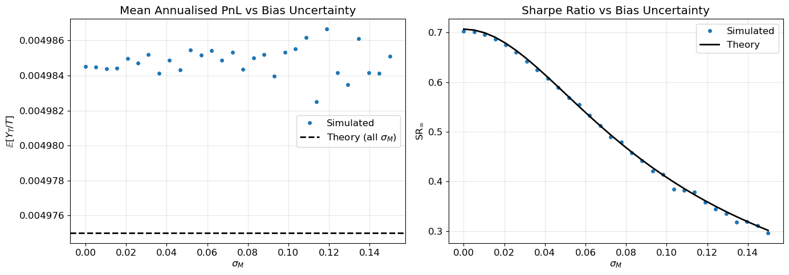

Expected Performance of a Mean-Reversion Trading Strategy - Part 3
2026-03-03
In Part 1 we derived the asymptotic Sharpe ratio \mathrm{SR}_\infty = \sqrt{\theta/2} for a mean-reversion strategy with perfect knowledge of fair value. Part 2 showed that a constant bias M in the fair-value estimate increases risk but leaves expected PnL untouched, producing a penalty factor (1 + 2\theta M^2/\sigma^2)^{-1/2}.
This post goes further: what happens when the bias is random or, more importantly, correlated with the true mispricing? The distinction between independent and correlated estimation error turns out to be qualitative:
A random independent bias only increases risk, just like the constant case — the Sharpe formula generalises by replacing M^2 with \mathbb{E}[M^2].
A correlated bias degrades the expected PnL itself: any positive \operatorname{Cov}(M_t, X_t) transfers expected alpha from the strategy to the estimation error.
An EMA trailing estimator used as the fair-value proxy always produces positive correlation. The resulting asymptotic Sharpe ratio is \mathrm{SR}_\infty = \theta/\sqrt{2(\theta + \lambda)}, where \lambda is the EMA decay rate.
Code
import numpy as npimport matplotlib.pyplot as pltplt.rcParams.update({"figure.figsize": (10, 5),"axes.grid": True,"grid.alpha": 0.3,"font.size": 12,})rng = np.random.default_rng(42)# --- OU helpers (same conventions as Parts 1–2) ---def s2(t, theta, sigma):"""Variance of X_t: sigma^2/(2*theta) * (1 - exp(-2*theta*t))."""return sigma**2/ (2* theta) * (1- np.exp(-2* theta * t))def simulate_ou(theta, sigma, T, dt, n_paths, rng=rng):"""Euler–Maruyama: dX = -theta*X dt + sigma dW, X_0=0.""" n_steps =int(T / dt) X = np.zeros((n_paths, n_steps +1)) sqrt_dt = np.sqrt(dt)for i inrange(n_steps): dW = rng.standard_normal(n_paths) * sqrt_dt X[:, i +1] = X[:, i] - theta * X[:, i] * dt + sigma * dWreturn Xdef simulate_ou_ema(theta, sigma, lam, T, dt, n_paths, rng=rng):"""Joint simulation of OU mispricing and EMA bias. dX = -theta*X dt + sigma dW, X_0 = 0 dM = lambda*(X - M) dt, M_0 = 0 """ n_steps =int(T / dt) X = np.zeros((n_paths, n_steps +1)) M = np.zeros((n_paths, n_steps +1)) sqrt_dt = np.sqrt(dt)for i inrange(n_steps): dW = rng.standard_normal(n_paths) * sqrt_dt X[:, i +1] = X[:, i] - theta * X[:, i] * dt + sigma * dW M[:, i +1] = M[:, i] + lam * (X[:, i] - M[:, i]) * dtreturn X, Mdef pnl_paths(X, M, dt):"""PnL paths: dY = -(X - M) dX. M can be: scalar, 1-D array (n_paths,) for per-path constant bias, or 2-D array (n_paths, n_steps+1) for time-varying bias. """ dX = np.diff(X, axis=1) X_mid = X[:, :-1]if np.ndim(M) ==2: M_mid = M[:, :-1]elif np.ndim(M) ==1: M_mid = M[:, None]else: M_mid = M dY =-(X_mid - M_mid) * dX Y = np.cumsum(dY, axis=1)return np.concatenate([np.zeros((X.shape[0], 1)), Y], axis=1)print("Helpers loaded.")
Helpers loaded.
1 Random Independent Bias
As a warm-up, suppose the trader’s bias M is drawn once from a distribution F with \mathbb{E}[M]=0 and \mathbb{E}[M^2] = \sigma_M^2, independently of the Brownian motion \{W_t\} that drives the mispricing process. Each realisation of M is a constant over the trading period, so conditionally on M the PnL is exactly the Part 2 expression:
Y_t = \frac{\sigma^2 t - X_t^2}{2} + M X_t.
Since M and X_t are independent and \mathbb{E}[X_t] = 0, the expected PnL is unchanged:
\mathbb{E}[Y_t] = \frac{\sigma^2 t - s_t^2}{2}.
For path risk, the quadratic variation d\langle Y\rangle_t = \sigma^2(X_t - M)^2\,dt gives, by the law of iterated expectation:
The message is the same as Part 2: uncertainty in fair value increases path risk without affecting the expected return. What matters for the Sharpe penalty is the total second moment \mathbb{E}[M^2], regardless of the shape of F.
Code
# --- Simulation: SR with random independent bias ---theta, sigma, T, dt =1.0, 0.10, 100, 1/252n_paths =3_000X = simulate_ou(theta, sigma, T, dt, n_paths)sigma_M_values = np.linspace(0, 0.15, 30)rng_M = np.random.default_rng(99)mean_pnls, sr_sim = [], []for sm in sigma_M_values: M_draw = rng_M.normal(0, sm, size=n_paths) if sm >0else np.zeros(n_paths) Y = pnl_paths(X, M_draw, dt) mean_pnl = (Y[:, -1] / T).mean() mean_pnls.append(mean_pnl) dX = np.diff(X, axis=1) dY =-(X[:, :-1] - M_draw[:, None]) * dX qv = np.sum(dY**2, axis=1) sr_sim.append(mean_pnl / np.sqrt((qv / T).mean()))fig, axes = plt.subplots(1, 2, figsize=(14, 5))# Left: mean annualised PnL vs sigma_M (should be flat)theory_mean =0.5* (sigma**2- s2(T, theta, sigma) / T)axes[0].plot(sigma_M_values, mean_pnls, "o", ms=4, label="Simulated")axes[0].axhline(theory_mean, color="k", ls="--", lw=2, label=r"Theory (all $\sigma_M$)")axes[0].set(xlabel=r"$\sigma_M$", ylabel=r"$\mathbb{E}[Y_T/T]$", title="Mean Annualised PnL vs Bias Uncertainty")axes[0].legend()# Right: SR vs sigma_M (theory + MC)sr_theory = np.sqrt(theta /2) / np.sqrt(1+2* theta * sigma_M_values**2/ sigma**2)axes[1].plot(sigma_M_values, sr_sim, "o", ms=4, label="Simulated")axes[1].plot(sigma_M_values, sr_theory, "k-", lw=2, label="Theory")axes[1].set(xlabel=r"$\sigma_M$", ylabel=r"$\mathrm{SR}_\infty$", title="Sharpe Ratio vs Bias Uncertainty")axes[1].legend()plt.tight_layout()plt.show()print("Left: expected PnL is invariant to bias uncertainty. Right: SR degrades with sigma_M.")

Left: expected PnL is invariant to bias uncertainty. Right: SR degrades with sigma_M.
2 Time-Varying Correlated Bias
We now allow the bias M_t to vary over time and to be correlated with the mispricing X_t. This is the practically relevant case: any estimate derived from the price history will, by construction, covary with price movements.
2.1 Expected PnL with correlated bias
The PnL decomposition from Part 2 still holds:
Y_t = \frac{\sigma^2 t - X_t^2}{2} + \int_0^t M_u\, dX_u.
The new ingredient is the expectation of the stochastic integral. Substituting the OU dynamics dX_u = -\theta X_u\, du + \sigma\, dW_u:
The stochastic integral has zero expectation (martingale property). Since \mathbb{E}[X_u] = 0, we have \mathbb{E}[M_u X_u] = \operatorname{Cov}(M_u, X_u). The expected annualised PnL is therefore:
This is the central result of the post. Compared to Parts 1–2, the expected PnL acquires a correction term proportional to the time-averaged covariance between the bias and the mispricing:
Positive covariance (M and X move together) \Rightarrow the expected PnL decreases. When the asset is overpriced (X>0), the bias also tends to be positive, so the trader under-estimates the overpricing and sells too little.
Negative covariance\Rightarrow the expected PnL increases. But this requires a contrarian estimator that anticipates mean reversion — a rare luxury in practice.
Zero covariance (independent bias) \Rightarrow the Part 2 result: expected PnL is unaffected.
2.2 A contrast: proportional bias
As a useful benchmark, consider the extreme case M_t = \rho\, X_t for some \rho \in [0,1). Then \tilde{X}_t = (1-\rho)\,X_t and the PnL satisfies Y_t = (1-\rho)\,(\sigma^2 t - X_t^2)/2. Both the expected PnL and the path risk scale by (1-\rho) and (1-\rho)^2 respectively, so the Sharpe ratio is unchanged at \sqrt{\theta/2}. Proportional bias reduces capacity but preserves risk-adjusted return — a qualitatively different outcome from the EMA trailing estimator we study next.
3 EMA Trailing Estimator
The most natural source of correlated bias is a trailing estimator of fair value. Suppose the trader estimates \tilde{v}_t by exponentially smoothing past prices:
where \lambda > 0 is the EMA decay rate. Since p_t = v + X_t (constant fair value) and \tilde{v}_t = v + M_t, the bias M_t = \tilde{v}_t - v satisfies
dM_t = \lambda\,(X_t - M_t)\,dt, \qquad M_0 = 0.
The bias is purely deterministic given the path of X — it has no diffusion component, only a lagged response to the mispricing. The EMA half-life is \ln 2/\lambda.
3.1 Stationary moments
The joint system (X_t, M_t) is a two-dimensional linear SDE. We derive stationary second moments by applying the product rule and setting time derivatives to zero.
\mathbb{E}[X_t^2] (from Parts 1–2): Using Itô’s formula, d(X^2) = (\sigma^2 - 2\theta X^2)\,dt + 2\sigma X\,dW, so in stationarity:
For the OU process, the autocovariance is \operatorname{Cov}(X_s, X_t) = s_s^2\, e^{-\theta(t-s)} \geq 0 for all s \leq t. Since both w and the autocovariance are non-negative, the integral is non-negative. It is strictly positive unless w = 0 almost everywhere, which would correspond to no estimation at all.
The EMA corresponds to exponential weights w(u) = \lambda e^{-\lambda u}. A simple moving average over a window \tau uses rectangular weights w(u) = 1/\tau for u \in [0,\tau]. In every case, the trailing estimate injects positive correlation, and the expected PnL falls below the perfect-information benchmark \sigma^2/2.
Correlated bias is qualitatively different from independent bias. In Part 2, a constant (or random independent) bias left expected PnL untouched and only increased risk. A correlated bias, by contrast, directly reduces the expected return. The mechanism is intuitive: when the trader’s fair-value estimate co-moves with the price, the estimate “chases” the price rather than anchoring to true value, weakening the mean-reversion signal at its source.
All trailing estimators produce positive correlation. The OU autocovariance is everywhere non-negative, so any non-negative weighting of past mispricings — whether exponential (EMA), rectangular (SMA), or otherwise — generates \operatorname{Cov}(M_t, X_t) > 0. This is an unavoidable cost of using price history to infer fair value under mean reversion.
The EMA penalty depends on a single ratio \lambda/\theta. The Sharpe degradation \sqrt{\theta/(\theta+\lambda)} = 1/\sqrt{1+\lambda/\theta} collapses to a universal curve in \lambda/\theta. The practical rule of thumb is: the EMA lookback (half-life \ln 2/\lambda) should be much longer than the OU half-life (\ln 2/\theta) — equivalently, \lambda \ll \theta — for the estimation-induced penalty to remain small.
At \lambda = \theta, the Sharpe ratio is \approx 71\% of the unbiased level. This is the “matched-speed” benchmark. The table below summarises the penalty for a few values:
\lambda/\theta
0
0.25
0.5
1
2
5
Penalty
1.00
0.89
0.82
0.71
0.58
0.41
Proportional bias leaves the Sharpe ratio invariant. When M_t = \rho\, X_t (the trader’s estimate is a fixed blend of truth and price), the PnL and QV scale by (1-\rho) and (1-\rho)^2 respectively, and the Sharpe ratio cancels to \sqrt{\theta/2} regardless of \rho. This stands in sharp contrast to the EMA result: the EMA introduces a lagged, asymmetric distortion — not a pure rescaling — and that asymmetry is what degrades risk-adjusted return.
6 Further Exploration
Several directions extend this analysis:
Time-varying fair value. When v_t itself follows a random walk or trend, the OU dynamics of X_t remain valid but the assumption dp_t = dX_t no longer holds. The interplay between estimation bias and fair-value drift is the subject of a future post.
Optimal \lambda with trading costs. The unbiased (\lambda=0) strategy generates the highest expected PnL but, as Part 1 noted, relies on continuous rebalancing — a frictionless fiction. With discrete trading and transaction costs, some smoothing of fair value may actually improve net performance by reducing turnover.
SMA and other kernels. The EMA has the cleanest analytics (thanks to the Markov property of the joint system), but simple moving averages and other kernel estimators are common in practice. Their qualitative behaviour follows from the general trailing-estimate result above; quantitative differences depend on the kernel shape.
Parameter uncertainty. In practice, \theta and \sigma are not known. Joint estimation of the OU parameters and fair value introduces additional correlations between the estimation error and the mispricing, further degrading expected performance.